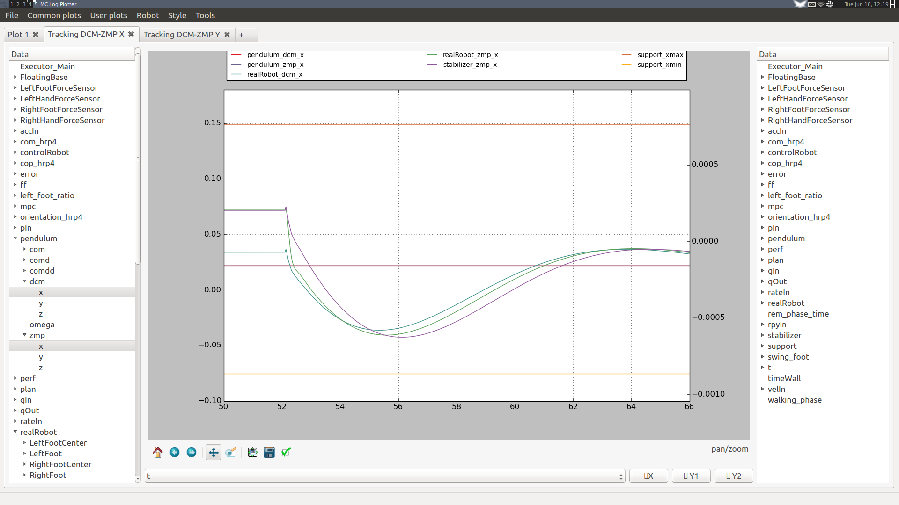
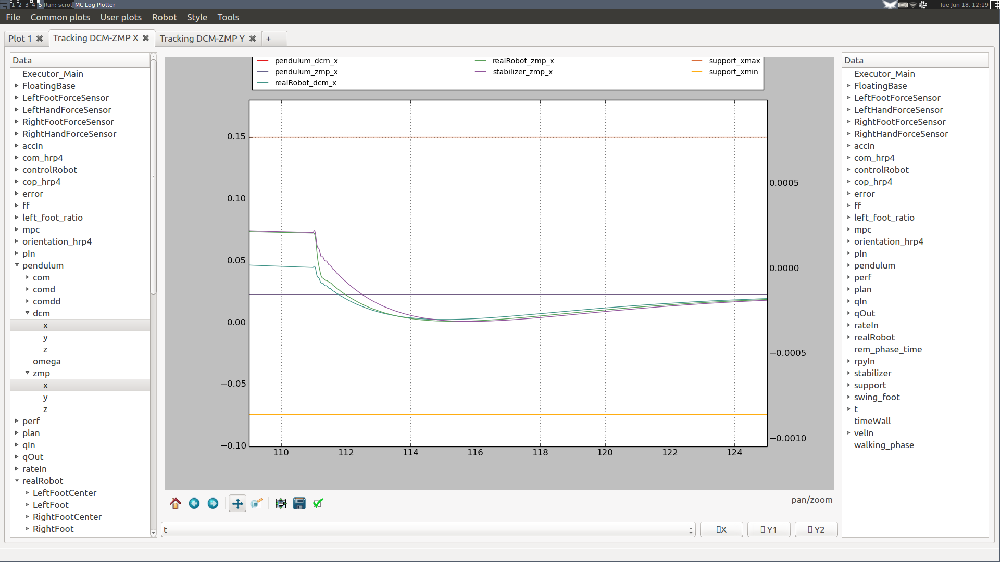
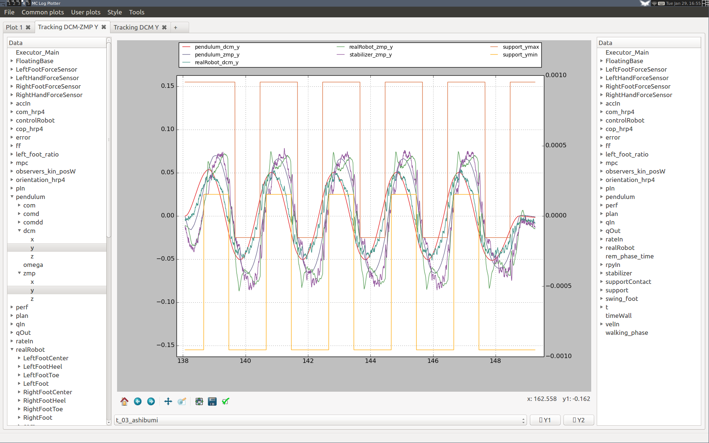
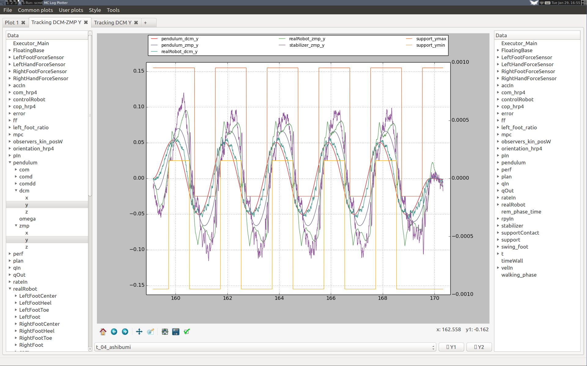
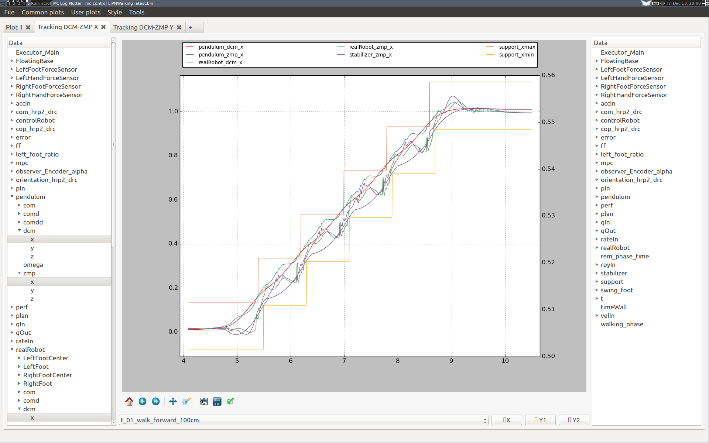
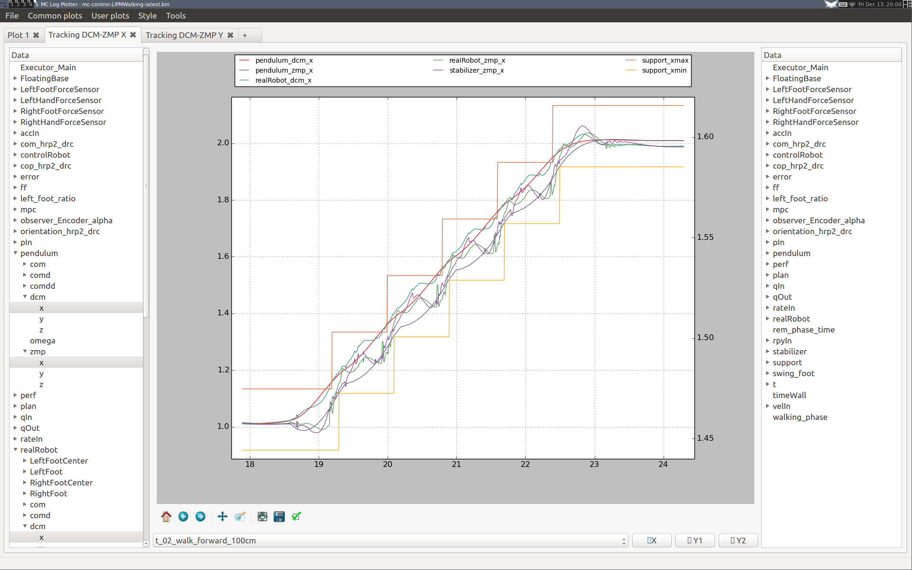
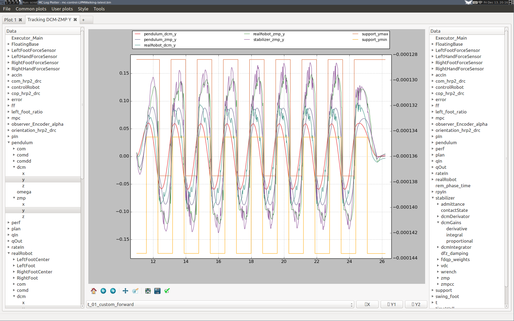
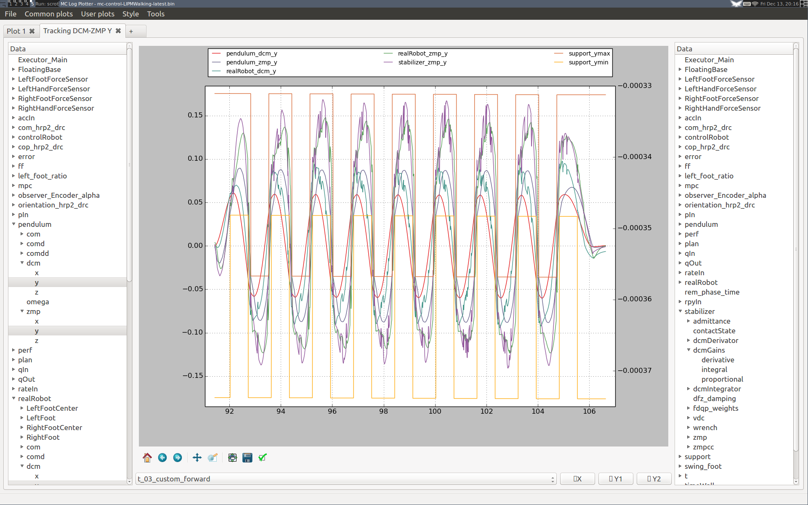
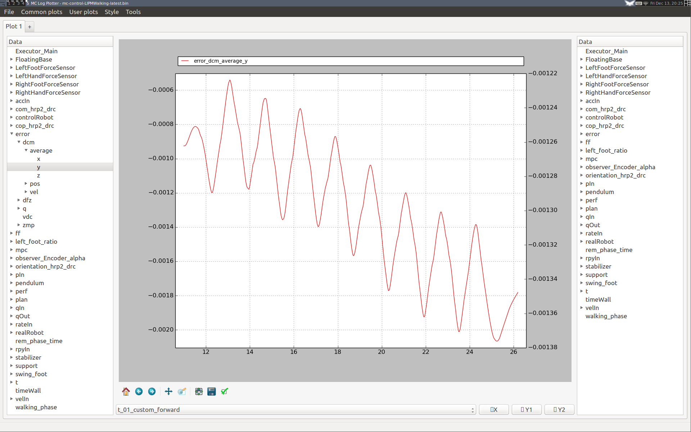
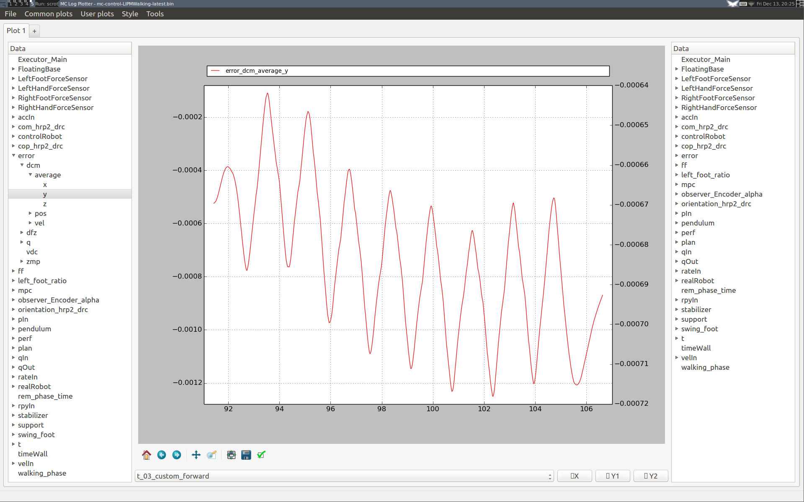

The balance controller (a.k.a. stabilizer) of the LIPM walking controller carries out feedback control to help the robot track its planned walking pattern. The theory behind it is documented in the post-print on stair climbing stabilization. This note outlines a process for tuning its balancing gains. It assumes you are already familiar with the concepts of divergent component of motion (DCM) and admittance control.
Feedback gains
There are two sets of gains to tune: admittance gains (force control) and DCM tracking gains (floating base control). We cannot achieve perfect position and force control at the same time due to e.g. delays and modeling errors. What we are aiming for is a compromise between the two, for a task like walking or stair climbing.
As a first approximation, we can imagine that these gains tune the compliance/stiffness of the floating base of the robot (we control the DCM because it is, in the end, the best way to control the floating base). Larger admittances make the floating base more compliant, improving force control in the short term but potentially degrading position tracking in the long term. Meanwhile, larger DCM tracking gains make the floating base stiffer, improving position tracking in the short term but yielding oscillations for high values. The threshold at which these oscillations appear depends on admittances (the larger the admittances, the lower the threshold).
Here is the list of main gains to configure and their rule-of-thumb effect.
DCM Tracking
Here are the DCM tracking gains and effects of increasing each one:
- Proportional: stiffens position control.
- Integral: reduces steady-state error, stiffens position control.
- ZMP: damps oscillations (allows higher proportional gain) but increases position compliance.
Ideally we would like these gains to be as low as possible. Larger modeling errors increase steady state error: we can compensate them (for the static part) by increasing the integral gain, but a large integral gain also has drawbacks (e.g. slow convergence if the integrator time constant is large, or risk of oscillations otherwise). Improving the model is, when possible, a more principled way to address the problem.
As an example, until version 1.3 of the controller we introduced a modeling error in wrench distribution discussed in this issue. With version 1.3 running on the HRP-2Kai humanoid, we could go down to a DCM proportional gain kp=4: at kp=3, the robot was marginally stable, complying to perturbations without returning to the desired equilibrium in standing tests. From version 1.4, we could take the gain down to kp=3 and even kp=2.
Admittance control
Here are the various admittance gains and effects of increasing each one:
- Foot CoPx admittance: improves CoP control but increases sagittal position compliance.
- Foot CoPy admittance: improves CoP control but increases lateral position compliance.
- Legs DFz admittance: improves foot force difference tracking in double support, can yield vertical oscillations.
- Legs DFz damping: Damps potential oscillations in double support.
- CoM Ax admittance: improves ZMP control but increases sagittal position compliance.
- CoM Ay admittance: improves ZMP control but increases lateral position compliance.
You can debug them with the by plotting the horizontal coordinates of the DCM over time, except for the foot DFz admittance which is better checked by plotting the vertical components of both foot contact forces. The DFz damping gain is an optional parameter that can be used for vertical vibration suppression on HRP-4, however it is not indispensable and we left it to zero in our experiments with this robot.
Standard tests
We mainly evaluate controller performance by plotting DCM and ZMP trajectories. All plots discussed below are distributed in a plot configuration for mc_log_ui that you can install as follows:
ayumi:~$ mkdir -p ~/.config/mc_log_ui
ayumi:~/.config/mc_log_ui$ ln -s ~/lipm_walking_controller/etc/mc_log_ui/custom_plot.json
Open the plotting GUI for the last run of the controller by:
ayumi:~$ mc_log_ui /tmp/mc-control-LIPMWalking-latest.bin
By default, mc_rtc stores your controller logs in /tmp. They will stay there until you reboot your machine.
Standing
Standing tests evaluate the performance of disturbance rejection when you push the robot around.
- Put the robot on the ground in standing posture
- Push the robot sagitally or laterally so that the measured ZMP at ground level lies between its rest position and the boundary of the support area
- Stop pushing
- Observe how the DCM returns to equilibrium
Here is an example from a Choreonoid simulation of the HRP-4 model:


On the left-hand plot, DCM proportional and integral gains were set to kp=1 and ki=10, and we see that the DCM is underdamped. On the right-hand plot, gains were set to kp=2 and ki=5, yielding a better performance (the DCM is only slightly underdamped). Note that the choice of PID gains for DCM tracking is affected by admittances: larger admittances tend to increase overshoot, but also decrease return time. To address this, (Kajita et al., 2010) chose to collectively model the performance of force control by a first order lag (whose time constant depends on all admittance gains). (Morisawa et al., 2014) use this model for gain tuning. Since version 1.2 of the controller, you can try it in the Stabilizer → Advanced → DCM pole placement input of the GUI.
Walking in place
Walking in place evaluates the lateral walking performance and is cheap to reproduce. It corresponds to the ashibumi plan loaded from configuration file (from Japanese 足踏み which means "walking in place"; it has the benefit of beginning with an 'a' so that the plan appears first in the list). Use it to evaluate the effect of different feedback gains on lateral DCM tracking performance over several walking cycles. Here are two examples.
Increasing the DCM proportional gain
Here are two plots ran on the HRP-4 hardware (v1.0 of the controller) where we increased the proportional gain of DCM tracking from 1 to 2:


Although DCM tracking is improved at the beginning of the first step, we can see that the performance is degraded in the long run for the higher DCM gain. After a couple of steps, DCM tracking performance is roughly the same, at the cost of much larger ZMP targets (stabilizer_zmp_y violet curve). We see also in the spikes in measured ZMP (realRobot_zmp_y green curve) that the second setting yields larger touchdown impacts.
Walking forward
Walking forward is the last test in our pipeline. It corresponds to the walk_forward_100cm plan loaded from the configuration file.
Increasing the DCM integral gain
Here are two plots from a Choreonoid simulation of HRP-2Kai (v1.6 of the controller) where we increased the integral gain of DCM tracking from 20 (left) to 42 (right):


Performance is better on the right-hand side, with both the DCM and ZMP closer to their references. Having the ZMP closer to the ankle frame (which is offset backward from the sole center) is also better to minimize deflection of the flexibility, which in turns reduces our kinematic tracking error and eventually reduces impact.
Here are plots in the lateral direction from the same simulation, walking three meters forward this time:


During the first steps the performance seems slightly degraded, as with a higher integral gain the integrator converges to its steady state behavior faster. We can check this by plotting its error curve:


Note that this behavior is general: the integrator "eats up" all our unmodeled effects, so while standing it will converge to a stationary value, and while walking it will drift step by step until reaching repeating oscillations. Overall, our performance loss is only transient and the overall lateral walking performance is not degraded with the higher integral gain. We can conclude that it is thus a better choice for this simulation.
Optional tunings
DCM integrator
The integrator used to evaluate the average DCM over time is an exponential moving average (EMA) over the last Ti seconds. The nominal value for HRP-4 is Ti=10 s, which works well in all cases we tested so far.
If you observe slow oscillations during standing after walking, your integrator time constant may be too large. We observed this behavior on HRP-2Kai while experimenting with . In this case, you may want to reduce your integrator time constant or increase your DCM P gain. Smaller time constants reduce the cutoff period of the EMA and thus make the DCM integral term closer to a proportional one. This is not the intended behavior, so if possible you should increase your DCM P gain instead. Look at your average DCM error variations (error_dcm_average log entry) to decide on a course of action.
Vertical drift control
Additionally, there are two gains for vertical drift control:
- Frequency: faster foot height averaging in double support.
- Stiffness: faster foot height drift correction in single support.
These gains are not critical, their purpose is to avoid long-term drift after several steps. Use the Swing foot Z plot to debug them.
Discussion
Feel free to post a comment by e-mail using the form below. Your e-mail address will not be disclosed.